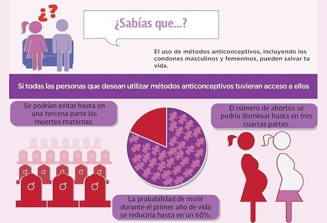

.

Los métodos anticonceptivos son las diferentes maneras que hay de prevenir el embarazo. Existen muchos tipos de anticonceptivos, por lo que tienes varias opciones para elegir la que mejor se adapta a ti. Aquí encontrarás la información que necesitas sobre cada uno de ellos. Estamos para ayudarte a entenderlo todo.
Para que nos quede mas claro lo que son los métodos anticonceptivos los podemos dividir en tres partes: Hormonales, de Barrera y Definitivos.
Los conceptos anteriormente mencionados se refieren a medio por el cual van a ser efectivos los metodos anticonceptivos
¿Cual es su grado de eficacia?
Algunos métodos anticonceptivos son más eficaces que otros.
Las parejas que mantienen relaciones sexuales deben utilizar métodos anticonceptivos de forma adecuada y cada vez que mantengan relaciones sexuales para evitar el embarazo. Por ejemplo, comprimidos anticonceptivos (también llamados "anticonceptivos orales" o "anovulatorios") pueden ser muy eficaces para evitar el embarazo. Pero, si una chica se olvida de tomar sus comprimidos cuando le tocan, dejará de ser un método eficaz. Los condones también suelen ser una forma eficaz de evitar los embarazos. Pero, si un chico se olvida de utilizarlo o no lo utiliza correctamente, no será una forma eficaz de evitar el embarazo.